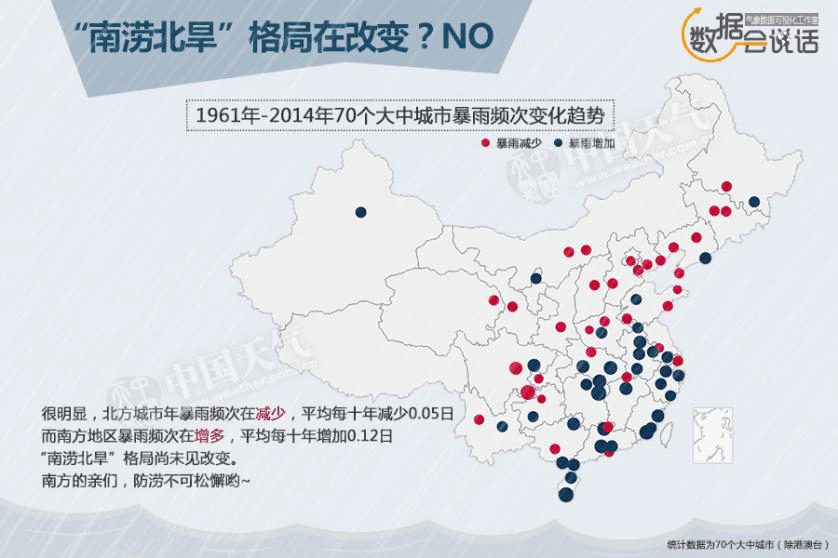

前 言
中国处于季风气候区，最热的时候正是雨水最丰沛的季节，决定了农耕文明的发展必须需要适应非旱即涝的异常变化。
从远古时期，中国人就与旱涝做斗争，长历时、高强度的降水引起的洪涝灾害与长期降水不足造成的严重旱灾经常交替出现，一直是我国面临的主要灾害。
1470至2017年，从明朝至今长达548年，虽然社会几度变迁，旱涝却深刻影响着农耕文化为主要核心的中华文明，例如朝代更替、人口迁移等。即使在工业化迅速发展的今天，旱和涝依然是无法回避甚至影响社会生活的最严重自然灾害。
1470（明朝）-2017年
中国旱涝演变历程
- 大涝
- 涝
- 正常
- 旱
- 大旱
548年来 中国一半时间非旱即涝
中国各地年降水量季节分配很不均匀，大多数地区降水集中在5月-10月，该时段降水一般占全年降水量80%左右，往往决定了当年的年景是偏涝、偏旱还是正常。
548年来，中国旱涝频发，总计约219年，也就是说，在这五百多年时间里，中国大约有一半时间里，处于涝或者旱状态。而且即使未发生全国范围的旱涝灾害，但由于我国幅员十分辽阔，季风气候的年际变率较大，夏季风起止时间早晚及强度的差异，也会导致几乎每年都存在个别地区偏涝或偏旱现象。
明朝至今，年景偏涝的年份多于偏旱，分别是133年和86年，大约每四年中国就会发生一次水灾。
综观548年的历史数据，最旱和最涝的年份均出现在明朝中后期，都呈现出全国性的特点，最涝的年份出现在1569年，最旱的则是1528年和1640年。
1569年为隆庆三年，南北方均发生大水，“直隶淮、济、徐、沛及浙东西江、南江北大水，坏城垣，淹田舍，漂人畜无算”。 嘉靖六年至八年，也就是1527-1529年，黄河、淮海、长江、珠江等中上游部分地区发生特大旱灾。
而1528年受灾县域最为广泛，北畿（今北京、天津、河北）、湖广（今湖北、湖南）广、河南、山东、山西、陕西大旱，大饥荒爆发，受灾县次达11-27个，部分地区甚至出现了“饥人相食”的惨状，仅一年就发生了4次战争。
中华人民共和国成立且有气象记录以来，最涝的两年均发生在厄尔尼诺次年，分别是2016年和1998年，最旱年出现在1972年，其次是1965年。过去不久的2016年，暴雨洪涝灾害南北齐发，全国共出现51次强降雨天气过程，平均降雨量为1951年以来最多，武汉、南京、合肥、新乡、安阳、石家庄、邯郸、太原等城市发生严重内涝，洪涝和地质灾害造成9954.9万人次受灾，直接经济损失3134.4亿元。干旱的致灾能力同样惊人。1972年因旱受灾面积为4.6亿亩，达到65%。不少地区水库干涸，河水断流，黄河在济南以下因干旱曾断流20天。北京在当年冬季甚至滴雨未降。
旱涝总是交替出现
全国 东北 华北 西北 长江中下游 华南 西南
从历史经验看，我国多雨期和少雨期总是交替出现，每隔20-30年就会发生一次旱涝转换。17世纪之前，中国在以旱型年景为主，17世纪末至18世纪初，经历了由旱到涝的转变，19世纪期间，年景以涝型为主，期间出现几次持续时间较长的水灾，20世纪以后，全国依然是旱涝交织，但逐渐向旱型转变，旱灾次数明显增多。
据研究，明朝在历史上处于偏冷的小冰期，几百年间整体偏旱。据分析，我国东部地区气候总体偏干。据统计，明朝长的连涝期分别出现在1564-1571年和1573-1580年，长的连旱期出现在1638-1643年，也就是明末发生的特大干旱。
到了19世纪，是我国特大暴雨洪水频繁发生时期，各主要江河的历史首位特大洪水均出现在此时，而洪水年份前后，伴随出现了一系列的严重寒冷和干旱灾害。长历时、高强度的降水引起的洪涝灾害与长期降水不足造成的严重旱灾经常交替出现。
20世纪以来，中国降水依然是旱涝交织。有专家分析，20世纪20年代为少雨期（1929年最少），50年代为多水年代，以后缓慢减少，70年代以后变化不大，但多雨带在80年代及以后由华北南移到长江中下游。
数据统计，21世纪10年代以来，全国平均降水量较常年整体偏多，尤其是2016年，是有气象记录以来降水量最多的一年。
“南涝北旱”格局可能依然持续
中国的降水不仅年际间差异大，地域分配也极不均匀，频发局地性、区域性水旱灾害。几乎每年都有数省或流域大范围内遭受水灾或旱灾，而且往往是同年份同一地区发生连季旱涝或者连年旱涝的情况。
一般来说，我国以“南涝北旱”的分布类型为主，也就是说，大部分年份是南方易偏涝，北方易偏旱。容易发生水灾的地区主要集中在东部地区尤其是长江中下游及其以南地区，旱灾主要分布在华北平原及西北的陕甘宁地区。
当夏季风较弱时，往往会出现南涝北旱，反之，则会北涝南旱。不过，南方偏旱、北方偏涝分布的情况也时有发生，尤其以17世纪较多，例如，1620-1629年，1650-1659年，1690-1709年，北涝多于北旱。
1961年以来，我国气候主要维持“南涝北旱”格局，大中城市中，北方城市年暴雨频次呈现减少趋势，大约平均每十年约减少0.05日，而南方地区暴雨频次在增多，平均每十年增加0.12日，也就是说，当前“南涝北旱”格局尚未见改变。
水旱中国
自古以来，我国是一个“靠天吃饭”的农业为主社会，降水多寡往往直接导致农业减产、蝗灾、河道变化等问题，如果旱涝连年将进一步加重灾害灾荒，从而影响人类活动甚至社会变迁和朝代更替。
-
1942年夏到1943年春，河南发生大旱灾，夏秋两季大部绝收。大旱之后，又遇蝗灾。饥荒遍及全省110个县。图片为1943年2月底至3月初，美国《纽约时报》记者福尔曼与《时代》周刊记者白修德在河南灾区实地采访时拍摄逃荒的饥民。
-
1998年，长江流域发生特大洪水。据统计，1998年全国受灾面积3.18亿亩，受灾人口2.23亿人，死亡3004人，倒塌房屋685万间，直接经济损失达1660亿元。（来源：新华社）
水旱灾害对人类的伤害各有特点。相对来说，旱灾的致命性在于其对农业生产的破坏力而且范围往往广泛，经常会造成绝产绝收，进而导致饥馑灾荒，特大型灾荒往往都是由旱灾制造的。1470年以来，明朝万历年间（1585-1590年）旱灾，明朝崇祯年间(1637—1643年）、清朝光绪初年的华北大旱灾（1875—1878年），民国时期1920年的北方五省大旱荒，1928至1930年的西北、华北大饥荒，1942至1943年的中原大饥荒和广东大饥荒，都是旱魃肆虐的突出表现。
其中以明崇祯末年的连续十年大旱灾和光绪初年的“丁戊奇荒”最厉害，这两次连续性干旱都造成非常严重的社会后果。中国历史上累次发生的农民起义，无不以荒年为背景，由此引起的社会动荡最严重的结果就是朝代更迭。
明末（1637-1643年）连年干旱导致陕西、山西、河南、山东、河北、内蒙古、安徽、江苏、浙江、湖北、湖南、贵州、四川、甘肃等23个省相继遭受严重旱灾，河北、河南、山西、陕西、山东连旱五年以上，旱区中心所在的河南省连旱7年，几乎大半个中国皆陷于苦旱，累岁奇荒，村舍十室九空，以致“赤地千里，饿殍枕藉，人相食。”其中又以1640-1641年旱情最严重，波及范围最广。葛全胜认为，明末连旱事件有可能是中国东部地区过去2000年最为严重的一次持续性旱灾。1639年每石米价银一两，到了1640年，石米涨到银3两至5两，加上沉重的赋役，民不聊生，迫使农民揭竿而起，陕西关中爆发了李自成、张献忠农民起义，很快席卷大半个中国，并最终导致明朝的灭亡。
清朝光绪元年至四年，也就是从1876～1879年，华北地区连续四年发生大旱。受灾地区有山西、河南、陕西、直隶（今河北）、山东等北方5省，并波及苏北、皖北、陇东和川北等地区。连昔日纵横泛滥、溃决频闻的黄河，也呈现出少有的枯水状况。据不完全统计，1876至1878年，仅山东等华北5省卷入旱灾的州县总数即分别为222、402和331个，旱区受灾民众约在1.6亿到2亿左右，约占当时全国人口的一半。大旱使农产品绝收，田园荒芜，以致于“饿殍载途，白骨盈野”，饿死的竟达1 000万以上，清朝官员每称之为有清一代“二百三十余年来未见之凄惨，未闻之悲痛”，被称之为“丁戊奇荒”。在清代频繁的旱灾中，最大、最具毁灭性的一次。
“丁戊奇荒”引发了中国近代史上大规模的灾民迁徙潮，其中尤以“走西口”和“闯关东”最为典型。“丁戊奇荒”迫使大批山西百姓背井离乡北上长城口外的蒙古，无以为生的山东饥民，大量外出逃荒至产粮较丰的东北奉锦一带，至1877年4月底，逃出山东而投奔他乡者已有300万人。
水灾的危害在于其频繁性。据《历史时期中国重大自然灾害时空分异特征》统计分析，从公元前180年到1911年统计发生的重大自然灾害共计190次，雨涝导致的水灾是发生频率最高的灾害。
新中国成立以来，随着基础设施建设的不断进步以及预报手段和防灾减灾水平的提升，人类对旱涝和洪灾等气象自然灾害的抵抗能力明显增强。因旱涝灾害造成的人员伤亡数不断下降，而且当代社会并未引发像古代那样的社会动荡和人口迁移。但不容忽视的是，随着工业社会的发展、城市化进程的快速发展，旱涝灾害对社会生活及经济等方面的影响更为深远，由此造成的经济损失。
据吴吉东等人统计分析，1949年-2013年，气象灾害造成的死亡人口绝对值和百万人口死亡率都有明显下降趋势，但气象灾害造成的直接经济损失绝对值呈上升趋势。综合来看，洪涝、台风等风暴类和干旱灾害、降水相关的滑坡、泥石流等次生灾害的影响呈上升趋势。
1950-2016洪涝灾情统计
- 受灾面积
- 因灾死亡人口
- 直接经济损失
1950-2016旱灾情统计
- 受灾面积
- 粮食损失
- 直接经济损失
- 饮水困难人口
为何旱涝灾害频繁且复杂？
自古以来，我国旱涝灾害频繁与我国的气候和地理环境有紧密联系。
连续性的暴雨或短时间的大暴雨是造成洪涝灾害的重要原因，而我国是世界上多暴雨的国家之一。我国地理纬度跨越大，使我国气候从赤道带到寒温带跨越了6个温度带。由于我国位于亚欧大陆东岸，东濒太平洋，使我国东部成为全球最典型的的季风区之一。季风进退的早迟，直接影响我国各地雨季的出现和降水的多寡，成为旱涝频繁发生的有一个主要原因。
我国地形十分复杂，高原盆地错落，高山河川纵横，气候更为复杂多样化。高大的山脉往往成为气候的分界线，山地以及四川盆地四周和太行山等地的迎湿风一侧都是多暴雨的地带。同时，我国西半部国土深入亚欧大陆腹地，来自海洋的水汽难于到达这一地区，使我国西北内陆成为极为干燥的大陆性气候区。
结语
中国的天灾之多，可能是世界之最。未来，在气候变化的背景下，极端灾害性天气将更频发，中国人面对的可能是更凶悍更频繁往复的旱涝天灾，势必需要以更科学、更有效的手段应对大自然的挑战。
前事不忘，后事之师。在应对旱涝灾害挑战上，除了科学技术的进步，气象历史资料是认识现代和未来的钥匙，历史变化序列可以弥补现代观测记录的不足，有助于认识现代在时代变化进程中的位置，而对过去情景的类比可以作为未来情景的早期预警，从而促进社会防灾减灾，建设美好生活。